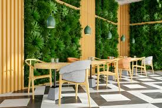

Bienvenidos a nuestra Cafetería Ecológica
En nuestra cafetería ecológica, nos comprometemos a ofrecer productos de la más alta calidad, cultivados de manera sostenible y respetuosa con el medio ambiente. Nuestro café es 100% orgánico, proveniente de fincas que practican la agricultura regenerativa para preservar la biodiversidad y el suelo.
Disfruta de un ambiente acogedor y natural, donde cada taza de café cuenta una historia de cuidado y compromiso con el planeta. Además, ofrecemos opciones veganas y productos locales para apoyar a nuestra comunidad.
Nuestros Productos Destacados
- Café orgánico de origen único
- Infusiones de hierbas naturales
- Postres veganos y sin gluten
- Snacks saludables y locales
